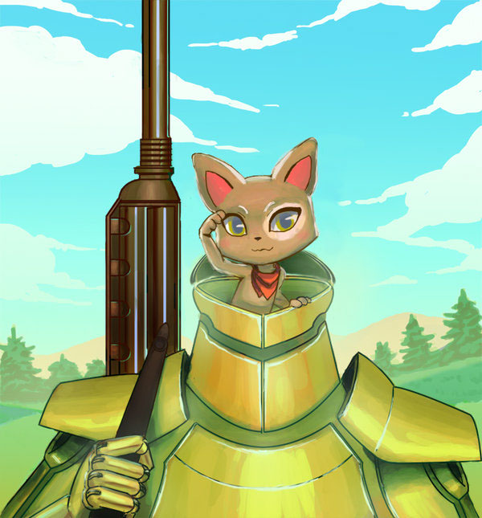
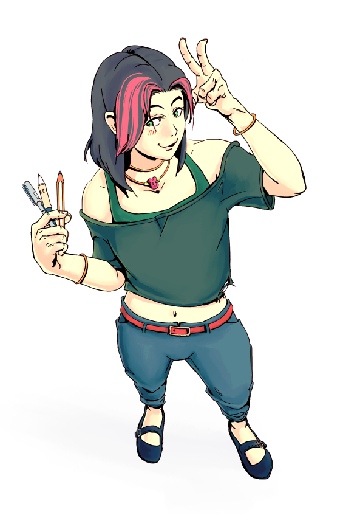

Digital drawing made in MangaStudio EX5, using flat colouring technique, flat colours and shadows.
 Digital drawing made in MangaStudio EX5, using cellshading and simple flat colours for the background.
 Digital drawing made in MangaStudio EX5, using soft shadows, airbrush, textures.
Digital drawing made in MangaStudio EX5, using soft shadows, airbrush, textures.
 Digital drawing made in MangaStudio EX5, in a semirealistic style with soft shadows and flats mainly.